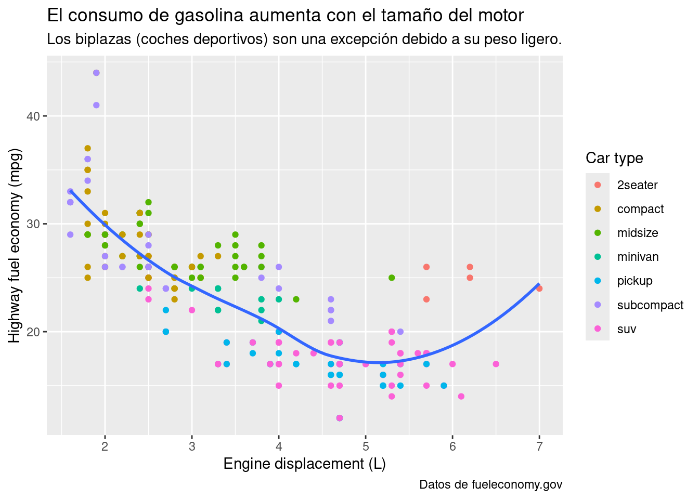
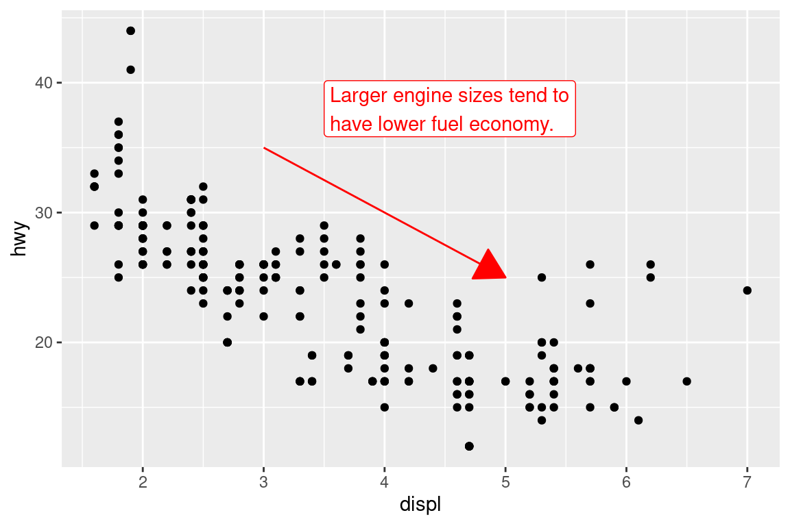
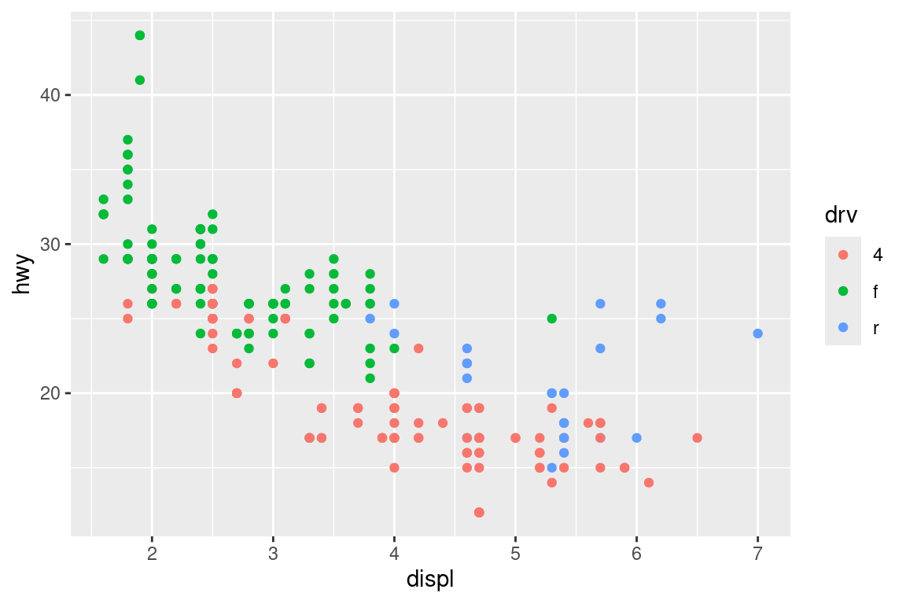
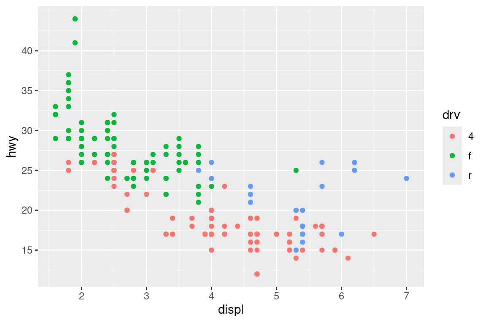
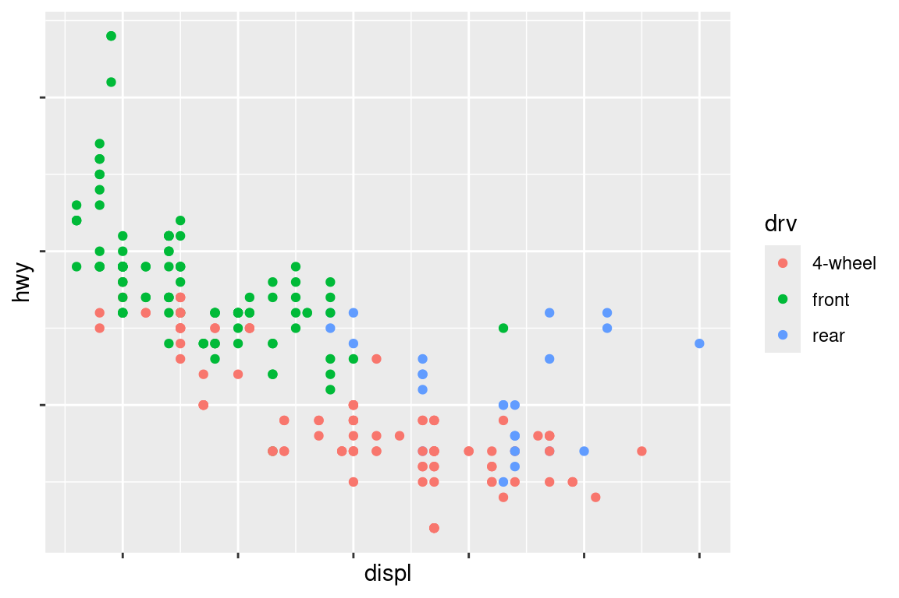
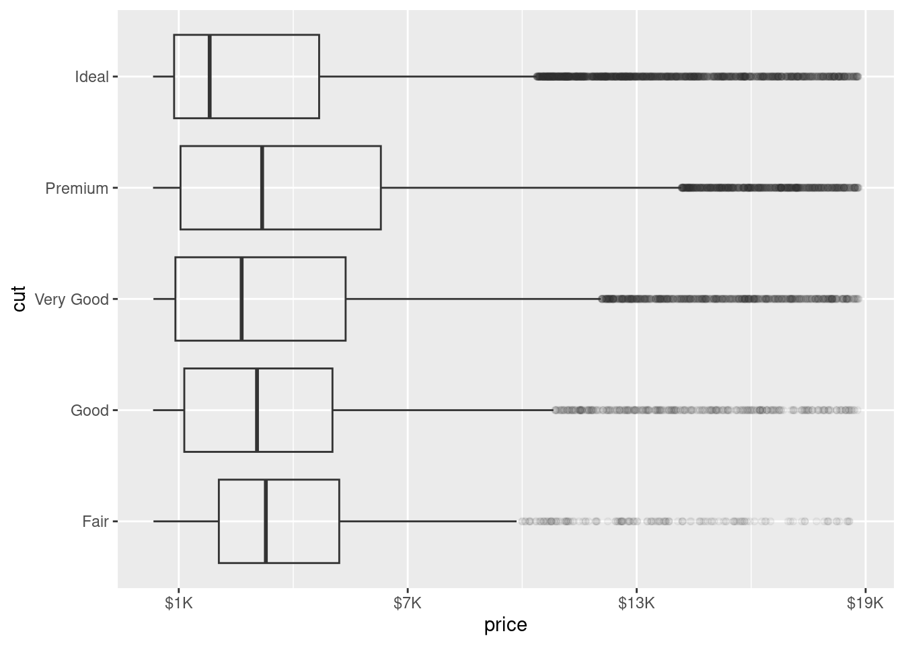
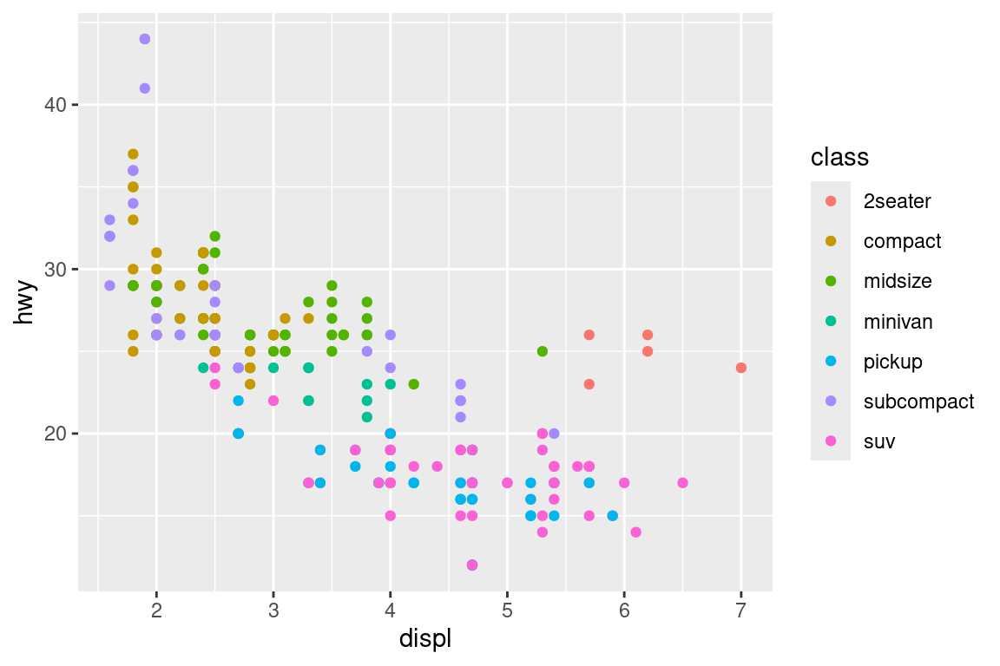
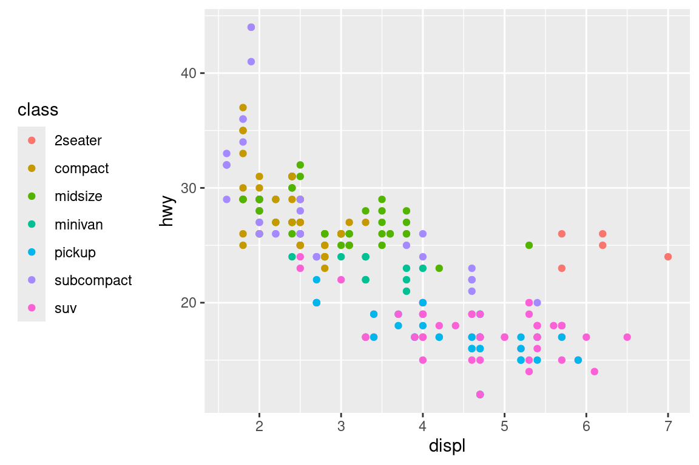
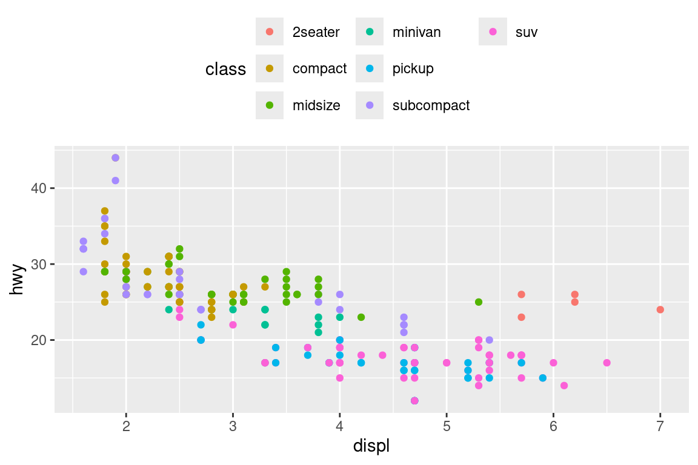
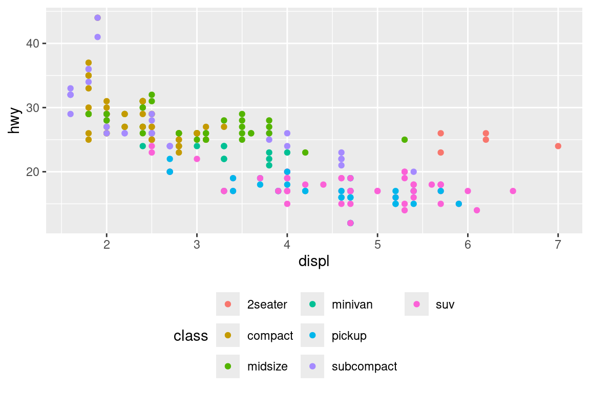

Diagrama de dispersión y línea suavizada que relaciona el tamaño delmotor (displ) con el consumo de gasolina (hwy) y coloreada por clase de vehículo. Etiquetado
ggplot(mpg, aes(x = displ, y = hwy)) +geom_point(aes(color = class)) +geom_smooth(se =FALSE) +labs(x ="Engine displacement (L)",y ="Highway fuel economy (mpg)",color ="Car type",title ="El consumo de gasolina aumenta con el tamaño del motor",subtitle ="Los biplazas (coches deportivos) son una excepción debido a su peso ligero.",caption ="Datos de fueleconomy.gov" )

# NOTA: El propósito del título de un gráfico es resumir el hallazgo # principal (algo así como una entradilla), NO describir el gráfico en # general. El subtítulo añade detalles adicionales. La caption (o segundo# subtítulo) se usa para describir la fuente de los datos.
Anotaciones
Filtrar por consumo de gasolina (hwy) y tamaño del motor (displ)
Diagrama de dispersión que relaciona el consumo de gasolina con el tamaño del motor; etiquetado por modelo y coloreado con rojo los autos que se filtraron antes
Diagrama de dispersión que relaciona el tamaño del motor con el consumo de gasolina. Con una flecha roja y una label
ggplot(mpg, aes(x = displ, y = hwy)) +geom_point() +annotate(geom ="label", x =3.5, y =38,label = trend_text,hjust ="left", color ="red" ) +annotate(geom ="segment",x =3, y =35, xend =5, yend =25, color ="red",arrow =arrow(type ="closed") )

Escalas
Marcas de ejes y leyendas
Gráfico de dispersión que relaciona el tamaño del motor con el uso de gasolina y coloreado por tipo de tracción
ggplot(mpg, aes(x = displ, y = hwy, color = drv)) +geom_point()

Gráfico de dispersión que relaciona el tamaño del motor con el uso de gasolina y coloreado por tipo de tracción. Se reescala el eje y
ggplot(mpg, aes(x = displ, y = hwy, color = drv)) +geom_point() +scale_y_continuous(breaks =seq(15, 40, by =5))

Gráfico de dispersión que relaciona el tamaño del motor con el uso de gasolina y coloreado por tipo de tracción. Sin las escalas del eje x e y y con las etiquetas de la escala de color cambiadas.
ggplot(mpg, aes(x = displ, y = hwy, color = drv)) +geom_point() +scale_x_continuous(labels =NULL) +scale_y_continuous(labels =NULL) +scale_color_discrete(labels =c("4"="4-wheel", "f"="front", "r"="rear"))

Diagrama de caja que relaciona el precio con la calidad del diamante. Con el eje de las x reescalado
Diagrama de caja que relaciona el precio con la calidad del diamante. Con el eje de las x reescalado. También está transparentado
ggplot(diamonds, aes(x = price, y = cut)) +geom_boxplot(alpha =0.05) +scale_x_continuous(labels =label_dollar(scale =1/1000, suffix ="K"), breaks =seq(1000, 19000, by =6000) )

Gráfico de barras que relaciona la calidad del corte con la claridad del diamante, con el eje de las y reesacalado para que aparezcan las etiquetas como porcentajes
Diagrama de dispersión que relaciona el tamaño del motor con el consumo de gasolina y coloreado por la clase de auto
base <-ggplot(mpg, aes(x = displ, y = hwy)) +geom_point(aes(color = class))
Por defecto la leyenda del color es a la derecha
base +theme(legend.position ="right") # the default

Aquí se cambia la etiqueta a la izquierda
base +theme(legend.position ="left")

Se cambia la leyenda a arriba y que esté en tres columnas
base +theme(legend.position ="top") +guides(color =guide_legend(nrow =3))

Se cambia la leyeda a abajo y que esté en 3 columnas
base +theme(legend.position ="bottom") +guides(color =guide_legend(nrow =3))

# NOTA: Si el gráfico es corto y ancho hay que colocarlo arriba o abajo,# si el gráfico es alto y estrecho es mejor colocarlo a la izquierda # o a la derecha.
Diagrama de dispersión que relaciona el tamaño del motor con el consumo de gasolina, coloreada por clase de auto, junto con una línea suavizada, con la leyenda abajo ordenada en 2 filas y con los círculos de las leyendas agrandadas a 4 pixeles